2026
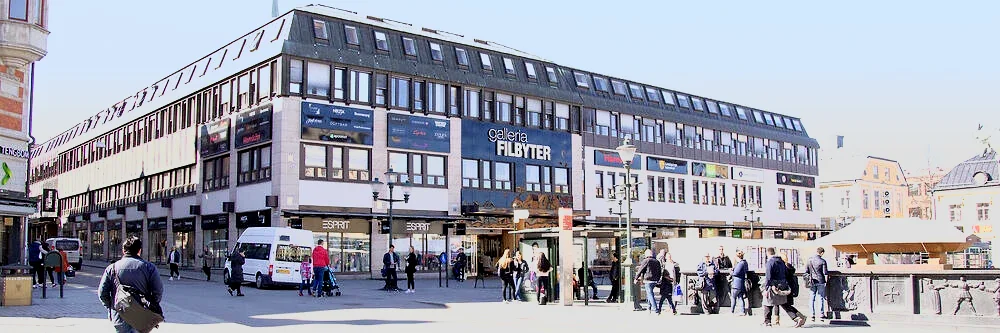
26 oktober 2026
Nytt uppdrag: lokalanpassning i Filbyter
VS Gruppen har tilldelats VS-arbetena i samband med en lokalanpassning i Filbyter i Linköping, på uppdrag av AdderaLink åt fastighetsägaren Vasaparken. Ännu ett fint förtroende i centrala stan.
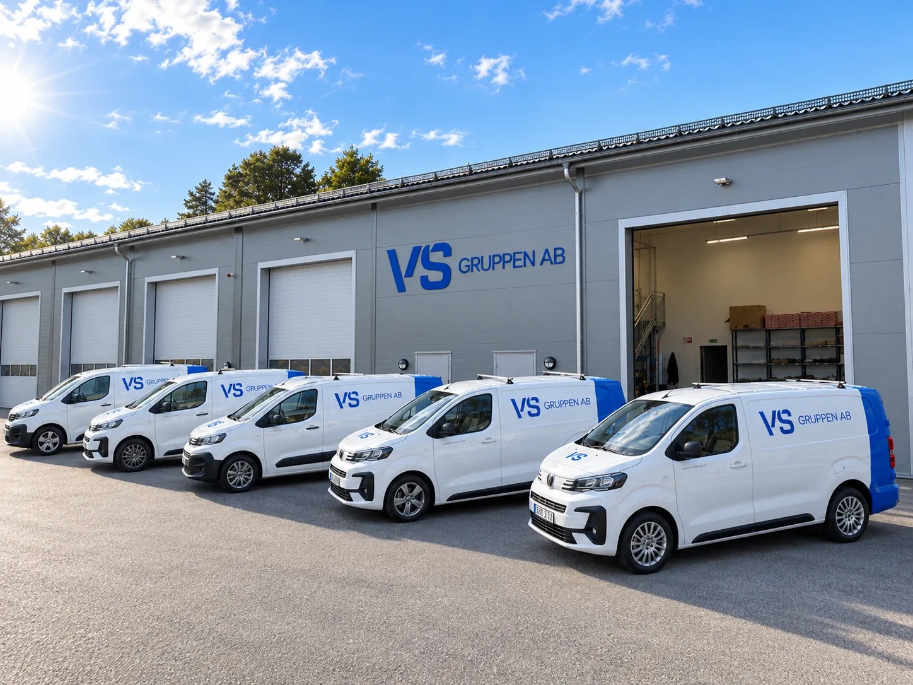
25 oktober 2026
Nya vsgruppenab.se är här
Vi har byggt om hemsidan från grunden — snabbare, tydligare och med hela projektportföljen samlad på ett ställe. Här hittar du numera över 25 utvalda projekt, allt om värmepumpar och en tydlig väg in oavsett om du är privatperson, företag eller BRF. Sidan du läser just nu är också ny: under VS Nyheter samlar vi vad som händer hos oss framöver.
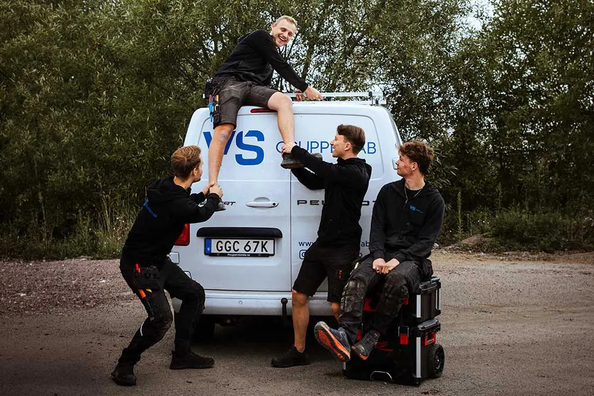
16 september 2026
VS Gruppen fyller 2 år!
Två år sedan starten — och vilken resa det har varit. Från en man och en servicebil till ett team med eget kontor, över 1000 utförda jobb och 4,9 i betyg på Google. Stort tack till alla kunder och samarbetspartners som gjort det möjligt. Nu växlar vi upp mot år tre!
7 september 2026
William Hårsmar förstärker teamet
Vi välkomnar William Hårsmar till VS Gruppen! William stöttar upp på servicesidan med fokus på eget vatten, värmepumpar och servicearbeten åt privatpersoner och mindre byggföretag.
13 juli 2026
Lokalanpassning på Drottninggatan 47
VS Gruppen har tilldelats VS-arbetena vid lokalanpassningen på Drottninggatan 47 i Linköping, på uppdrag av BC Bygg AB åt Stångåstaden.
1 juni 2026
Vi har flyttat in i nya kontoret!
Idag flyttar VS Gruppen in i vår nya lokal — ett kontor och en bas byggd för nästa kapitel. Extra stolta är vi över att vi själva stått för VS-installationerna i huset. Välkommen förbi!
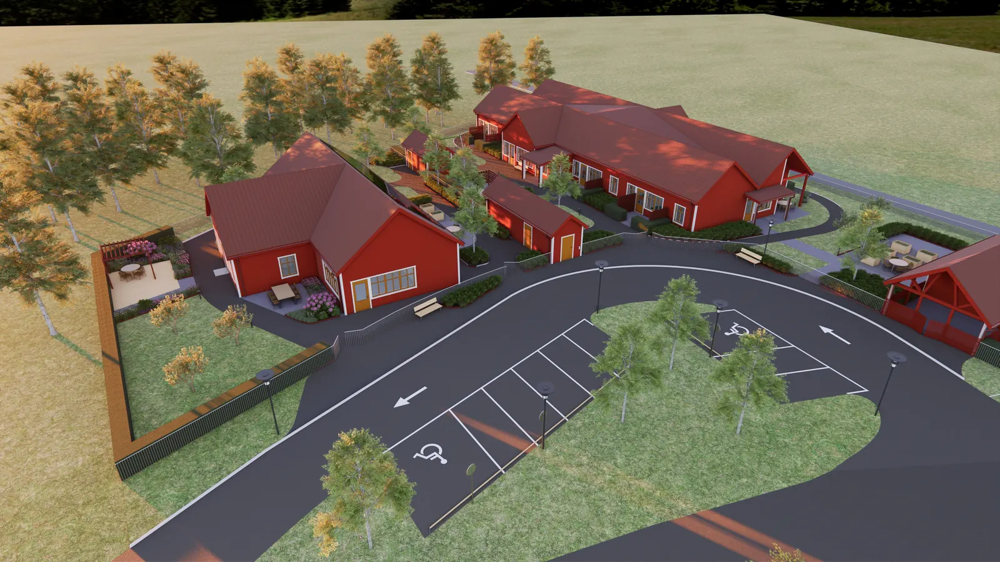
10 april 2026
VS-entreprenad: nytt LSS-boende i Finspång
VS Gruppen har tilldelats VS-arbetena i produktionen av ett nytt LSS-boende, som Lindstams Bygg uppför åt Finspångs kommun. Ett samhällsviktigt projekt vi är stolta över att vara del av.
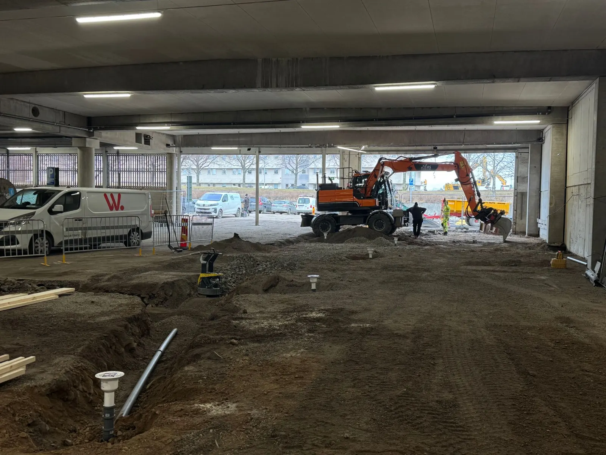
25 februari 2026
Avloppsarbeten vid ny kylcentral
VS Gruppen ansvarar för avloppsarbetena i samband med produktionen av en ny kylcentral, som Wilzéns bygger åt Tekniska verken.
15 februari 2026
Max Sjöberg ansluter till teamet
Vi välkomnar Max Sjöberg till VS Gruppen! Max stöttar upp entreprenadsidan med fokus på större byggen och lokalanpassningar.
22 januari 2026
Storköksrenovering på Bishops Arms
VS Gruppen har tilldelats renoveringen av storköket på Bishops Arms i Linköping, på uppdrag av Kron & Karlsson.
2025
14 december 2025
Två tvättstugor renoveras åt HSB
VS Gruppen har tilldelats VS-arbetena i samband med renoveringen av två tvättstugor, på uppdrag av HSB.
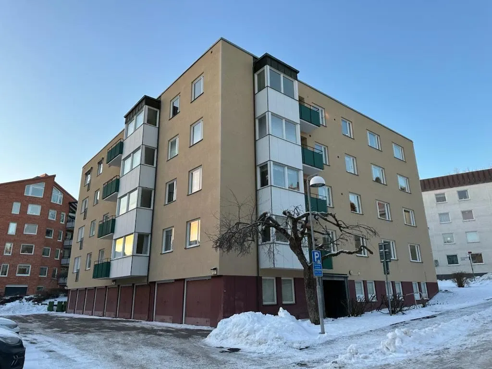
2 december 2025
Stamrenovering och fyra lägenheter åt Kron & Karlsson
VS Gruppen har tilldelats en stamrenovering samt renovering av fyra lägenheter, på uppdrag av Kron & Karlsson.
25 november 2025
Axel fyller 1 år på VS Gruppen!
Ett år sedan Axel Renholm klev ombord — och vilket år. Villaproduktioner, badrum, värmepumpar och nöjda servicekunder i en strid ström. Grattis Axel, och tack för allt du ger teamet!
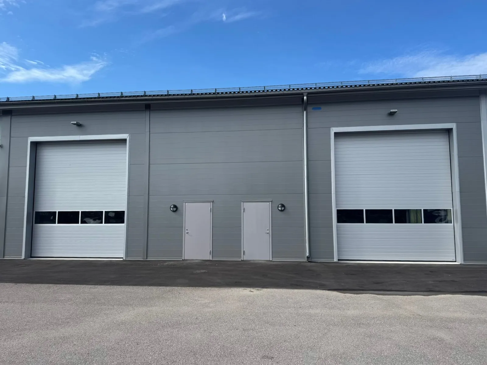
19 november 2025
Milstolpe: VS Gruppen bygger — och flyttar in i — ny fastighet
Idag tecknar vi hyresavtal i en helt ny fastighetsproduktion som blir VS Gruppens nya huvudkontor. Och det bästa av allt: vi ansvarar själva för VS-arbetena i produktionen. Att få bygga huset vi ska växa i är den största milstolpen i bolagets historia hittills — ett kvitto på resan från start till etablerad VVS-partner, och startskottet för nästa kapitel.
14 oktober 2025
Vi lanserar våra kvalitets- och miljöpolicys
VS Gruppen lanserar våra kvalitets- och miljöpolicys — ramverket för hur vi arbetar, kvalitetssäkrar och tar ansvar för hållbarheten i varje projekt. Inga floskler: det här ska märkas ute hos kund.
16 september 2025
VS Gruppen fyller 1 år!
Ett år sedan starten! Från första servicebilen till ett växande team med projekt åt både privatpersoner, byggbolag och industri. Tack till alla som varit med under första året — det här är bara början.
12 augusti 2025
Jakob Wilhelmsson förstärker teamet
Vi välkomnar Jakob Wilhelmsson till VS Gruppen! Jakob fokuserar på entreprenad och byggen — en viktig förstärkning när projektsidan växer.
3 april 2025
Omfattande villarenovering i centrala Linköping
VS Gruppen får ansvaret för en omfattande villarenovering i centrala Linköping — nya stammar, badrum och kök.
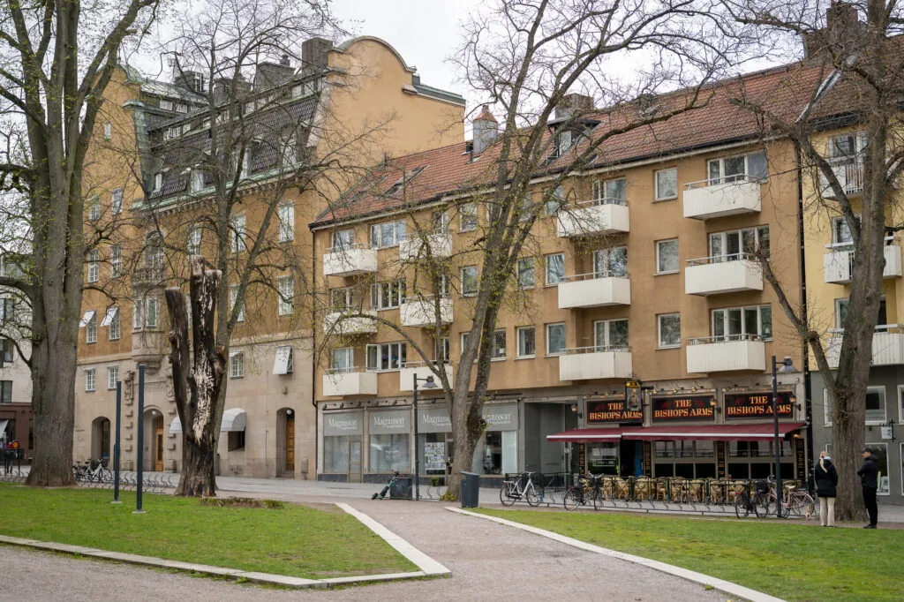
28 mars 2025
Kontor blir sju lägenheter i centrala Linköping
VS Gruppen har tilldelats VS-arbetena i en omfattande lokalanpassning där kontorsytor konverteras till sju lägenheter, på uppdrag av Kron & Karlsson.
2 mars 2025
Exklusiv renovering på Storholmen i Stockholm
VS Gruppen ansvarar för en exklusiv renovering av ett sommarhus på Storholmen utanför Lidingö i Stockholm — allt nytt, från inkommande kallvatten och framåt.
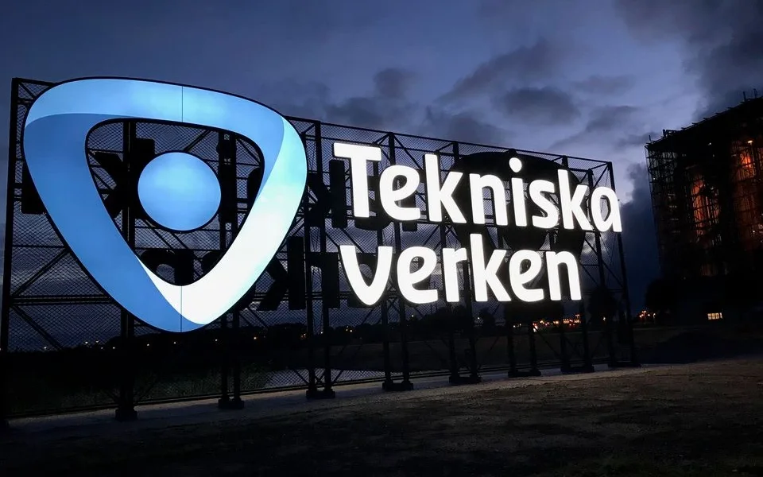
22 februari 2025
Nya fläktluftvärmare åt Tekniska verken
VS Gruppen får förtroendet att leverera, byta och installera nya fläktluftvärmare på reningsverket, åt Tekniska verken.
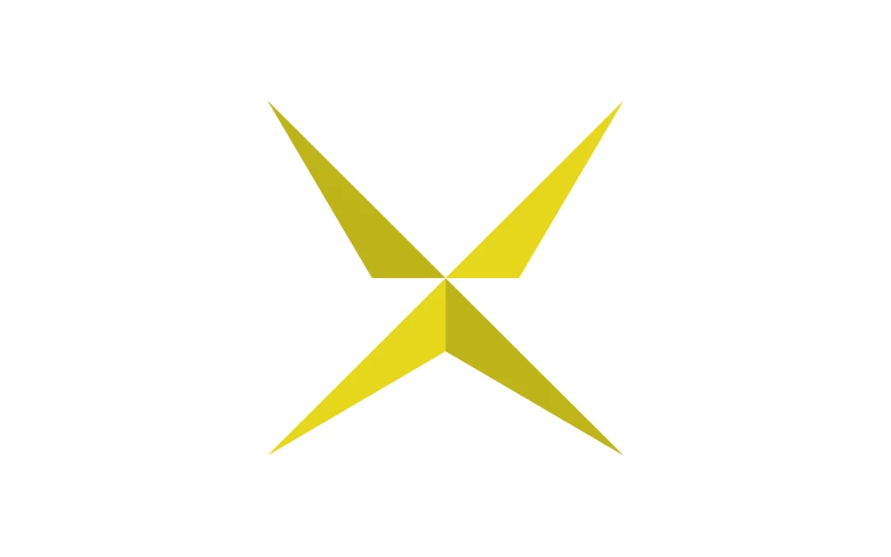
16 februari 2025
VS-arbeten åt Stjärnklinikens nya lokal
VS Gruppen har tilldelats VS-arbetena i samband med lokalanpassningen av Stjärnklinikens nya lokal i centrala Linköping, på uppdrag av Kron & Karlsson.
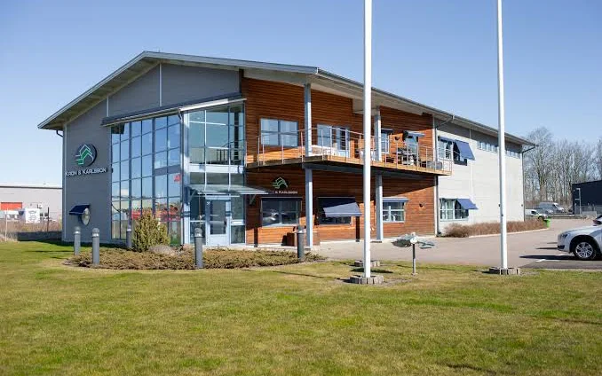
20 januari 2025
Energieffektivisering av Kron & Karlssons kontor
VS Gruppen får i uppdrag av Kron & Karlsson att konvertera värmen i deras kontorsfastighet och injustera systemet — för lägre energianvändning och jämnare komfort.
2024
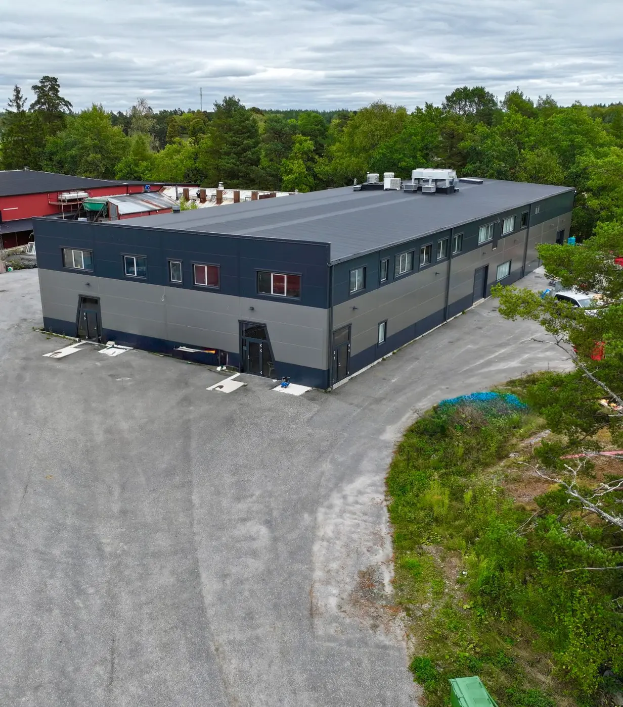
3 december 2024
Fastighetskonvertering på Gudbyvägen 49
VS Gruppen tilldelas projektet Gudbyvägen 49 i Upplands Väsby — en fastighetskonvertering på 3000 kvm med installation av bergvärmepump, radiatorer och shuntar.
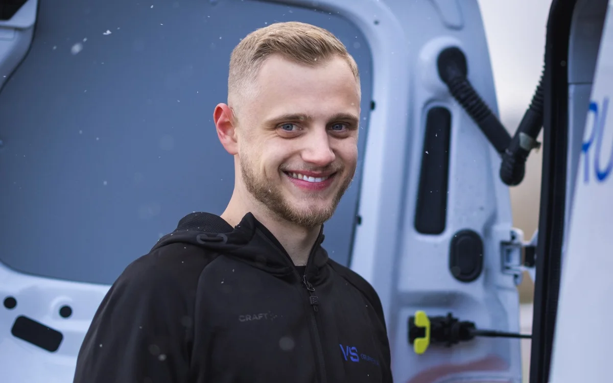
25 november 2024
Axel Renholm ansluter till VS Gruppen
Vi välkomnar Axel Renholm till VS Gruppen! Axel fokuserar på servicesidan med villaproduktioner, badrumsrenoveringar och värmepumpar — samt allmänna servicejobb.
28 september 2024
Första entreprenaden: Träförädlingens butik och lager
VS Gruppen tilldelas VS-arbetena i samband med Träförädlingens renovering av butik och lager — vårt första större entreprenaduppdrag, bara veckor efter starten.
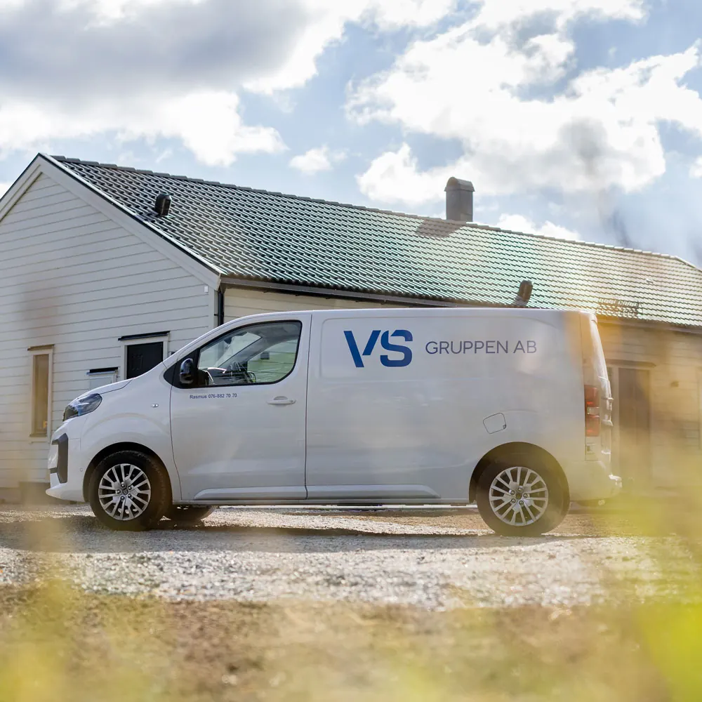
16 september 2024
VS Gruppen i Linköping AB startas
Idag startas VS Gruppen i Linköping AB — med en enkel idé: att bygga den VVS-partner vi själva hade velat anlita. Kunnig, ärlig och med framtiden i fokus. Installerar framtiden. Idag.